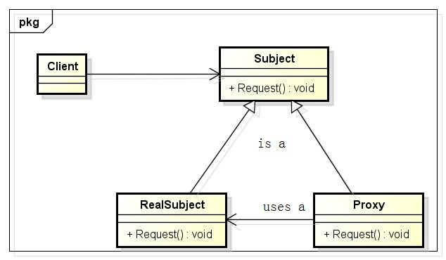

代理模式
1 什么是代理模式？
在GOF的《设计模式:可复用面向对象软件的基础》一书中对代理模式是这样说的：为其他对象提供一种代理以控制对这个对象的访问。结合上面的游戏代理的例子和下面的图，我们来进行分析一下。以前你是这样玩游戏：

现在有了游戏代理，你是这样玩游戏：

代理服务器干了什么？它代替你去和游戏服务器进行交互。它访问游戏服务器的速度比你使用校园网访问游戏服务器的速度快很多。所以，你的游戏延迟就下来了。
代理模式分为四类：远程代理，虚代理，保护代理和智能引用。在下面使用场合会对这四种进行分别介绍。
2 UML类图
Proxy
保存一个引用使得代理可以访问实体。若RealSubject和Subject的接口相同，Proxy会引用Subject，就相当于在代理类中保存一个Subject指针，该指针会指向RealSubject；
提供一个与Subject的接口相同的接口，这样代理就可以用来替代实体；
控制对实体的存取，并可能负责创建和删除它；
其它功能依赖于代理的类型，例如：
远程代理负责对请求及其参数进行编码，并向不同地址空间中的实体发送已编码的请求；
虚代理可以缓存实体的附加信息，以便延迟对它的访问；
保护代理检查调用者是否具有实现一个请求所必须的访问权限。
Subject：定义RealSubject和Proxy的共用接口，这样就在任何使用RealSubject的地方都可以使用Proxy；
RealSubject：定义Proxy所代理的实体。
3 使用场合
上面也总结了，代理模式分为远程代理，虚代理，保护代理和智能引用这四种，而分为这四种，就是对应不同的使用场合的。
远程代理为一个对象在不同的地址空间提供局部代理；
虚代理根据需求创建开销很大的对象；
保护代理控制原始对象的访问；保护代理用于对象应该有不同的访问权限的时候；
智能引用取代了简单的指针，它在访问对象时执行一些附加操作，它的典型用途包括：
对指向实际对象的引用计数，这样当该对象没有引用时，可以自动释放它；
当第一次引用一个持久对象时，将它装入内存；
在访问一个实际对象前，检查是否已经锁定了它，以确保其他对象不能改变它。
4 代码实现

1 #include <iostream> 2 using namespace std; 3 4 #define SAFE_DELETE(p) if (p) { delete p; p = NULL;} 5 6 class CSubject 7 { 8 public: 9 CSubject(){}; 10 virtual ~CSubject(){} 11 12 virtual void Request() = 0; 13 }; 14 15 class CRealSubject : public CSubject 16 { 17 public: 18 CRealSubject(){} 19 ~CRealSubject(){} 20 21 void Request() 22 { 23 cout<<"CRealSubject Request"<<endl; 24 } 25 }; 26 27 class CProxy : public CSubject 28 { 29 public: 30 CProxy() : m_pRealSubject(NULL){} 31 ~CProxy() 32 { 33 SAFE_DELETE(m_pRealSubject); 34 } 35 36 void Request() 37 { 38 if (NULL == m_pRealSubject) 39 { 40 m_pRealSubject = new CRealSubject(); 41 } 42 cout<<"CProxy Request"<<endl; 43 m_pRealSubject->Request(); 44 } 45 46 private: 47 CRealSubject *m_pRealSubject; 48 }; 49 50 int main() 51 { 52 CSubject *pSubject = new CProxy(); 53 pSubject->Request(); 54 SAFE_DELETE(pSubject); 55 }
output:
CProxy Request CRealSubject Request
最简单的实现，对上述UML类图的直接代码体现：
智能指针使用引用计数实现时，就是最好的使用代理模式的例子。在下面的例子中，SmartPtr就是一个代理类，而T*m_pData才是实际的数据。SmartPtr代理实际的数据，去实现了指针的行为，添加了引用计数，从而实现了智能指针。
在线不能编译，因为windows.h，vc6也不能编译；
1 #include <iostream> 2 #include <windows.h> 3 using namespace std; 4 5 #define SAFE_DELETE(p) if (p) { delete p; p = NULL; } 6 7 class KRefCount 8 { 9 public: 10 KRefCount():m_nCount(0){} 11 12 public: 13 unsigned AddRef(){ return InterlockedIncrement(&m_nCount); } 14 unsigned Release(){ return InterlockedDecrement(&m_nCount); } 15 void Reset(){ m_nCount = 0; } 16 17 private: 18 unsigned long m_nCount; 19 }; 20 21 template <typename T> 22 class SmartPtr 23 { 24 public: 25 SmartPtr(void) 26 : m_pData(NULL) 27 { 28 m_pReference = new KRefCount(); 29 m_pReference->AddRef(); 30 } 31 32 SmartPtr(T* pValue) 33 : m_pData(pValue) 34 { 35 m_pReference = new KRefCount(); 36 m_pReference->AddRef(); 37 } 38 39 SmartPtr(const SmartPtr<T>& sp) 40 : m_pData(sp.m_pData) 41 , m_pReference(sp.m_pReference) 42 { 43 m_pReference->AddRef(); 44 } 45 46 ~SmartPtr(void) 47 { 48 if (m_pReference && m_pReference->Release() == 0) 49 { 50 SAFE_DELETE(m_pData); 51 SAFE_DELETE(m_pReference); 52 } 53 } 54 55 inline T& operator*() 56 { 57 return *m_pData; 58 } 59 60 inline T* operator->() 61 { 62 return m_pData; 63 } 64 65 SmartPtr<T>& operator=(const SmartPtr<T>& sp) 66 { 67 if (this != &sp) 68 { 69 if (m_pReference && m_pReference->Release() == 0) 70 { 71 SAFE_DELETE(m_pData); 72 SAFE_DELETE(m_pReference); 73 } 74 75 m_pData = sp.m_pData; 76 m_pReference = sp.m_pReference; 77 m_pReference->AddRef(); 78 } 79 80 return *this; 81 } 82 83 SmartPtr<T>& operator=(T* pValue) 84 { 85 if (m_pReference && m_pReference->Release() == 0) 86 { 87 SAFE_DELETE(m_pData); 88 SAFE_DELETE(m_pReference); 89 } 90 91 m_pData = pValue; 92 m_pReference = new KRefCount; 93 m_pReference->AddRef(); 94 return *this; 95 } 96 97 T* Get() 98 { 99 T* ptr = NULL; 100 ptr = m_pData; 101 102 return ptr; 103 } 104 105 void Attach(T* pObject) 106 { 107 if (m_pReference->Release() == 0) 108 { 109 SAFE_DELETE(m_pData); 110 SAFE_DELETE(m_pReference); 111 } 112 113 m_pData = pObject; 114 m_pReference = new KRefCount; 115 m_pReference->AddRef(); 116 } 117 118 T* Detach() 119 { 120 T* ptr = NULL; 121 122 if (m_pData) 123 { 124 ptr = m_pData; 125 m_pData = NULL; 126 m_pReference->Reset(); 127 } 128 return ptr; 129 } 130 131 private: 132 KRefCount* m_pReference; 133 T* m_pData; 134 }; 135 136 class CTest 137 { 138 public: 139 CTest(int b) : a(b) {} 140 private: 141 int a; 142 }; 143 144 int main() 145 { 146 SmartPtr<CTest> pSmartPtr1(new CTest(10)); 147 SmartPtr<CTest> pSmartPtr2(new CTest(20)); 148 149 pSmartPtr1 = pSmartPtr2; 150 }
上面的实现，就是对代理模式的最原始体现，现在提供一个有血有肉的实际应用级的体现：
智能指针使用引用计数实现时，就是最好的使用代理模式的例子。在上面的例子中，SmartPtr就是一个代理类，而T*m_pData才是实际的数据。SmartPtr代理实际的数据，去实现了指针的行为，添加了引用计数，从而实现了智能指针。
5 总结
我在第一次接触代理模式的时候，看它的UML类图，发现它和适配器模式的类适配器很像，再一看，又和装饰模式非常像；不仔细区分，真的是很容易混乱的。下面就做简单的区分，说多了也都是“狡辩”了。
适配器Adapter为它所适配的对象提供了一个不同的接口。相反，代理提供了与它的实体相同的接口。然而，用于访问保护的代理可能会拒绝执行实体会执行的操作，因此，它的接口实际上可能只是实体接口的一个子集。
尽管Decorator的实现部分与代理相似，但Decorator的目的不一样。Decorator为对象添加一个或多个功能，而代理则控制对对象的访问。
我在这里进行区分，你们看了，也就像我在咬文嚼字一样；这就是结构型设计模式；它们之间都有一些细微的差别。你也可以说，在适配器模式进行接口适配时，添加一些数据转换就变成了远程代理；你也可以说装饰模式虽然功能不一样，在我看来，大同小异；是的，不管你怎么说，就像1000 个读者心中有1000 个哈姆雷特一样，每个人对设计模式的理解都是不一样的；最重要的是我们能在实际应用中进行活学活用，如果能做到这个；不管什么设计模式，那只是一个名字，就像对于富人来说，钱只是一个银行卡上的一个数字一样。
本页共35段，1908个字符，4685 Byte(字节)